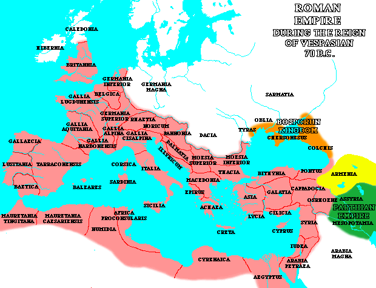
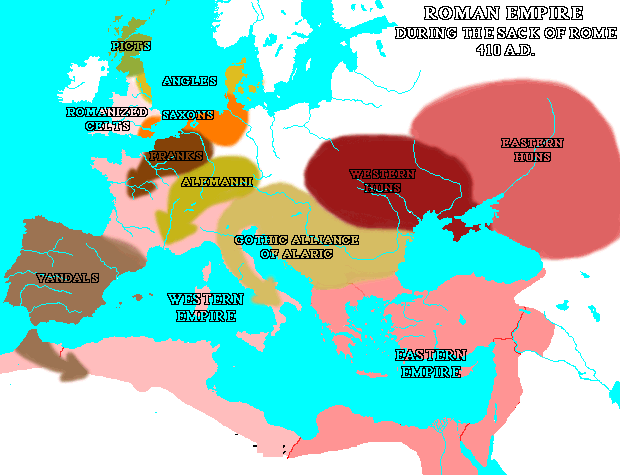

![[logo: Kansas Heritage
Group]](../graphics/heritage.gif) The coming of the Germans
The coming of the Germans
|
Dictionary and Thesaurus 1. If one wishes to consider German-Roman relations on a broad scale, there were actually four German "invasions" of the empire. A. Trade By about A.D. 70, the Romans had fixed their frontiers along the Rhine and Danube rivers, and manufacture had sprung up there to supply the garrisons. A steady trade with the Germans grew up and continued throughout the imperial period. The Roman silver solidus became the standard currency for both frontier Romans and the Germans beyond the frontier, and each group influenced the other in various and significant ways.  B. Military Recruiting Part of Diocletian and Constantine's reforms beginning in 285 was the deemphasis of the frontier legions and the formation of mobile armies of hired troops, primarily Germans, stationed in the interior. More economical than the frontier defense system, by decreasing Roman presence in the frontier districts this policy weakened Roman influences beyond imperial frontiers in the West and strengthened Germanic influences in the interior of the empire. C. Imperially-Sponsored Immigration From about 350 onwards, the western empire suffered from a shortage of manpower, largely because of a diminishing native population coupled with the inability to wage successful wars in order to capture prisoners to enslave. The government sponsored various types of immigration to compensate for this shortage and, under these policies, many Germans entered the empire on a permanent basis. 1. Laeti (pronounced LAY-tee) Foreigners were allowed in on an individual or family basis and assigned empty lands. They were expected to perform military service when called upon to do so. Note that the practice of offering a grant of land in exchange for military service would become a basic characteristic of medieval Europe. 2. Numeri (pronounced NOO-mehr-ee) Foreign warrior contingents hired by the Romans, the numeri were allowed to fight with their own weapons under their own leaders and to retain their own language and customs. Note the use of Germanic war- bands. 3. Federati (pronounced fehd-uhr-AH-tee) The administration attempted to avoid any potentially dangerous concentration of any specific group of Germans within the empire within the empire by giving members of immigrant groups grants of land scattered throughout the empire. In time this policy was abandoned and entire tribes were allowed to cross the frontier and occupy lands along the Roman side of the border. Allowed to retain their own political organization and other customs, and generally free from taxes, they were expected to defend their section of the border and to provide recruits for the Roman army. Note that the practice of territorial immunity foreshadowed yet another characteristic of the military practices of the Middle Ages. D. The Great Invasions 1. Background The Huns from central Asia defeated the Ostrogoths and forced the Visigoths to seek the status of federati and the protection of the lower Danube river (376). Subjected to Roman taxation and other abuses by local administrators, they rebelled and marched upon Constantinople to seek redress from the emperor. The emperor determined not to allow such a precedent and led the eastern Roman army against the Visigoths. The Romans were disastrously defeated at the battle of Adrianople (378), and the emperor killed. A new emperor, Theodosius (379-396) arrived from the West and stabilized affairs by settling the Visigoths in Illyria, the former Yugoslavia In 402, supported and subsidized by the Eastern Empire, the Visigothic king, Alaric, attacked Italy. Stilicho (STIHL-ih-cho), the German commander of the western Roman armies, stripped the western frontiers of troops in order to hold off Alaric. On Christmas Day of 406, the Germanic tribes of the Alans, Vandals and Sueves (pronounced "swaves") crossed a frozen Rhine river and the invasions had begun. 2. The "Barbarian Conquest" Stilicho was murdered in 408, and, in 410, Alaric and the Visigoths entered Italy and sacked Rome.  The heart of the empire could not produce enough food to feed its resident population and had depended on imports from grain-producing regions for a considerable time. Thus it was essential for the Roman command to hold onto the regions that produced the food surpluses that they needed -- Aquitaine in southern France, Andalusia in southern Spain, North Africa, and the Mediterranean islands of Sicily, Sardinia, and Corsica. Despite the obvious importance of these lands to the survival of the Western empire, the imperial administration managed to throw them all away. The Roman government got the Visigoths to leave Italy by giving them Aquitaine, provided that they would drive out the Vandals occupying Andalusia. The Visigoths invade Spain in 429, and the Vandals, under King Gaiseric (guy-ZEHR-ik), fled over the Straits of Gibraltar to begin the conquest of North Africa. Meanwhile the Visigoths decided to keep both Aquitaine and Andalusia, and the Vandals found that they had captured the Roman fleet base at Carthage together with a large part of the Western Roman fleet. Deciding to use it, they took to the sea and, in a few years, controlled the western Mediterranean, including Sicily, Sardinia, and Corsica. By 455, they were strong enough to launch an amphibious operation to capture and sack Rome. 3. The "Fall" of the Roman Empire in the Weest Food prices in Italy began to rise swiftly, and the German commander of the Roman armies, Odovacar (OH-doe-vah-cur), asked that the troops be given lands on which they could raise their own food instead of being given a money salary that seemed always insufficient with which to support themselves. The regent, Orestes (ohr-REHS-teez), refused and Odovacar had him killed. The general then deposed the boy emperor, Romulus Augustulus (RAHM-you-luhs aw-GUHST-you-luhs), had him made a monk and sent him to a pleasant monastery on the Mediterranean coast. He then sent the diadem, purple robes, and red slippers - the symbols of imperial authority -- to the eastern emperor with the comment that the Roman Empire in the West had ceased to exist (476). In 486, bands of Franks under the young chieftain, Clovis, attacked and conquered the lands between the Seine and Loire rivers in France that had still been under the control of a Roman official, Syagrius (see-AG-ree-us). The last Roman lands were now in the hands of Germanic leaders, except perhaps in England. This is the period usually assigned to the almost entirely legendary King Arthur. It may be that the Britons had chosen their own emperor, Ambrosius Aurelianus (AAM-broh-zee-uhs Aw-ree-lee-AHN-uhs), and he had chosen a Welsh leader, Uther Pendragon (OO-thuhr PEHN-drah-guhn) as his army commander. Uther's son, Arthur, succeeded him, and took over the emperorship at the death of Ambrosius -- but this is all speculation. The Eastern Roman emperor sent the Ostrogoths and their king Theodoric (thee-AHH-doh-rihk) against Odovacar. In 489, Theodoric contrived to have Odovacar killed and himself installed, with the approbation of the Eastern emperor, as king of Italy. 4. The Situation in 500
Map of the Mediterranean World in 490 AD IN FACT, the Western Empire was now in the hands of a series of "barbarian" kings. IN THEORY, however, all these German leaders were simply lieutenants of the eastern emperor. The Romans could believe that the empire had not fallen, but in fact had been reunited. That was only theory however. The next phase in the process of "the fall of the Roman empire" came when Justinian, the Eastern emperor (527-565), was forced to recognize the actual state of affairs and attempted to turn that theoretical unity into reality.
|
Lynn Harry Nelson
Emeritus Professor of
Medieval History
The University of Kansas
Lawrence, Kansas